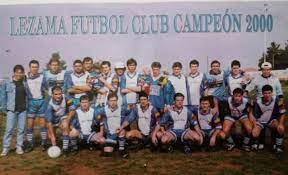

El equipo proveniente de Lezama actualmente compite en la liga chascomunense de futbol, disputandose actualmente el torneo clausura que se divide en 3 zonas, cada una con respectivos equipos ya establecidos por sus regiones y en la pasan los 2 primeros de cada zona y y los dos mejores 3ros de las mismas.
El Lefu cuenta con dos titulos de esta liga, uno en 1992 y la segunda vez en el 2000.
